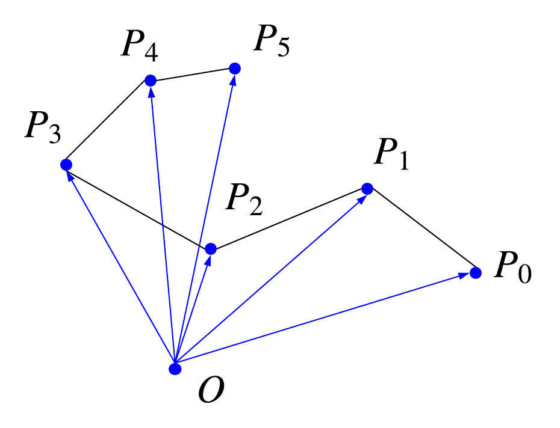
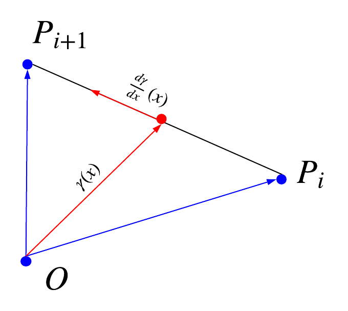

array of duration elapsed for each displacement between two successive positions.
Must be of length position.length - 1.
position vectors representing the curve
parameter between 0 and 1
value of the duration at x
parameter between 0 and 1
value of the length at x
parameter between 0 and 1
value of position at x
position vector to insert
duration elapsed since last position
parameter between 0 and 1
value of position at x
Generated using TypeDoc
Brief
Curve represents a parametrized curve in an arbitrary affine space.
Main features
push,poporigintranslate,affine, ...Getting started
A curve is a discrete set of Vector objects that describes a polygonal curve in ND-space. It has an origin that is common to all points. The curve can be parametrized with different speeds along it.

Create a curve
First create a set of vectors that represents the polygonal curve and a choose a time step.
let positions = [Vector3.ex, Vector3.ey, Vector3.exn, Vector3.eyn]; let dt = 0.1;If you want to set a variable time step along the curve you can specify
dtas an arraylet dt = [0.1, 0.01, 1];Note If
positionsis of size N thendtis of size N-1.Then choose your origin and construct the curve :
const origin = Vector3.zeros let curve = new Curve(positions, origin, dt); // origin is (0, 0, 0)Note It's preferable that the origin does not reference an object contained in the
positionsarray and that references inpositionspoints to different instances.Positions
The
positionsarray stores position of curve samples relative tothis.origin, when affecting a new origin, the new relative positions are recomputed. It's the same process as what was done for Point3 class.LIFO Structure
You can push/pop elements of the curve. When pushing you have to specify the position vector to insert. You can also specify a time step
dtwhich correspond to the duration to perform a displacement from the last stored to the position to insert.Example
curve.push(Vector3.ez) // push with default value of time step curve.push(Vector3.ez, 0.1) // push with given value of time stepHowever when popping a value a couple with duration and position is always returned.
Example
arr = curve.pop() // [u, dt]Interpolation
As polygonal curves, we can perform linear interpolation between two points of the curve. This allows to get the speed, position and many other values along the curve as if it was a polygonal continuous curve.
All the interpolation functions uses
xparameter, a real value between0and1:x = 0denotes the starting of the curvex = 1denotes the ending of the curvex = 0.5denotes the middle of the curve
Note γ denotes the position vector on the curve according to the parametrization with
x.Example
let u = curve.position(0.5); // middle point of the curve let v = curve.length(1); // total length of the curve let w = curve.speed(0); // initial speed of the curveTranslation and Transformation
Apply matrix transform, translations and affine transforms the same way as for Point3 class..